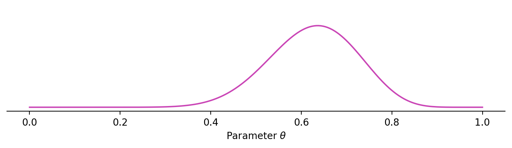

timeline
2008-2012: MEng in Engineering
2012-2013: MRes in Neuroinformatics
2013-2017: PhD in Informatics @ Edinburgh
2017-2020: Research fellow @ NUS
2020-2021: Research associate @ Newcastle
2021-2022: Research software developer @ UCL
2022-: Research data scientist @ UCL
Bayesian inference in differentiable generative models with Mici
Matt Graham
Centre for Advanced Research Computing
üèõÔ∏è Introducing ARC
UCL’s research, innovation & service centre for the tools, practices, systems and people that enable computational science and digital scholarship.
- We provide advanced, reliable and secure digital research infrastructure – including hardware, software, data and skills – to researchers in UCL and beyond​.
- We are a laboratory for research, teaching and innovation in compute, data and software intensive research methods​.
üßë‚Äçüíª ARC‚Äôs professional expertise
Software engineering
- Create efficient, reliable, reusable & sustainable code​
- Mentor in good practices
Data science
- Derive insights from data​
- Develop novel algorithms / tools​
- Modelling & simulation
Data stewardship
- Extracting long-term value from data
- Data engineering & pipelines​
- Publishing (FAIR) data
Infrastructure development
- Design, build & maintain custom hardware & software infrastructure
- Create performant, resilient systems​
Investment & strategy management
- Supporting & directing research activities​
- Delivery of large-scale projects
More details at https://www.ucl.ac.uk/arc/research-technology-professionals​
üßë‚Äçüè´ Training and support
MSc modules
- RSE with Python
- Research computing
- Machine learning with big data
- Engineering for data analysis
Training
- Becoming a digital researcher
- Improving research software
- Using high performance computing
Drop-in & support
- In person and online drop-in sessions
- Slack workspace for community discussion
- Extensive online guides
Centre for Doctoral Training
- Collaborative Computational Modelling at the Interface
- Joint venture between UCL & Imperial
- EPSRC funded
More details at https://www.ucl.ac.uk/arc/education​
üñ•Ô∏è Platforms and services
Research computing
Myriad (high throughput computing)
Kathleen (high performance computing)
Contender (novel architectures)
Aristotle, JupyterHub, RStudio (teaching)
Trusted research environment
Research data
Research data storage (ongoing)
Research data repository (archival)
Research data transfer (inter-institution)
Electronic research notebook
Harbour (external data)
More details at https://www.ucl.ac.uk/arc/platforms-and-services
üéâFestival of Digital Research, Innovation and Scholarship
A full-day event and evening celebration of all aspects of digitally-enabled research and scholarship with a series of keynotes, panel sessions, demonstrations & workshops.
- üìÖ Tuesday 15th July 2025
- üó£Ô∏èCall for submissions open (deadline 1st May 2025)
- üìùRegistration for attendance open
- üîó https://tinyurl.com/dris-2025
üë£ My path to ARC
Undergraduate
in
information
and
computer
engineering.
MRes
+
PhD
in
Doctoral
Training
Centre
in
Neuroinformatics
and
Computational
Neuroscience,
with
thesis
on
Auxiliary variable Markov chain Monte Carlo methods
.
Postdoctoral
positions
in
computational
statistics
groups
at
National
University
of
Singapore
and
Newcastle
University.
Joined
UCL
as
a
research
software
developer
in
April
2021.
Research
data
scientist
at
ARC
since
April
2022.
ü§î What is my role at ARC?
- Work within both the Collaborations and Education teams.
- Typically work on ~2 research projects at a time - currently:
- developing a Python package for differentiable and GPU accelerated spherical transforms (with Jason McEwen),
- implementing statistical algorithms to support detection of tipping points (ARIA VERIFY).
- Also deliver some of ARC’s training and teaching.
- Line management of colleagues.
- Developing grant proposals and PhD supervision.
üåç Bayesian inference
Bayes theorem describes how to combine
- prior assumptions about the world,
- with information from observations,
- to give our posterior beliefs given the observed data.
As we get more observations we update our posterior beliefs.

Globe example taken from taken from Statistical Rethinking by Richard McElreath.
üé≤ Monte Carlo method
- Key operation to perform with posterior is integration.
- In general integrals cannot be computed analytically.
- If we can sample from posterior we can estimate integrals as averages over samples.

⛓️ Markov chain Monte Carlo (MCMC)
- Typically we cannot independently sample the posterior.
- Instead generate chain of dependent samples.
- Algorithms exist to ensure distribution of chain of samples converges to posterior as number of samples increases.
üèô Metropolis-Hastings algorithm
General approach to defining a Markov chain with stationary distribution with density \(\pi\) given a proposal distribution with density \(q\).
- Sample proposed new point \(\theta' \sim q(\cdot \,|\, \theta)\).
- Compute probability of accepting proposal \(a = \min\left(1, \frac{\pi(\theta') q(\theta \,|\, \theta')}{\pi(\theta) q(\theta' \,|\, \theta)}\right)\)
- Return \(\theta'\) with probability \(a\) otherwise return \(\theta\).
üï∞Ô∏è Historical aside
- First MCMC methods developed at Los Alamos and run on MANIAC I, one of first von Neumann architecture computers.
- While Metropolis is most closely associated with algorithm, reported1 to have had little involvement in development.
üï∞Ô∏è Historical aside

- According to account by Marshall Rosenbluth, Edward Teller had key early idea, but he and Arianna did most of work.
- Augusta Teller programmed an earlier version of algorithm and Arianna Rosenbluth wrote the first full implementation.
⚛️ Hamiltonian Monte Carlo
Hamiltonian Monte Carlo is a gradient-based MCMC method which introduces auxiliary momentum variables \(p\).
Given target distribution with density \(\pi\), define augmented target \(\bar{\pi}(\theta, p) = \pi(\theta) \exp(-\frac{1}{2}p^{\mathsf{T}}M^{-1}p)\) and Hamiltonian
\[ H(\theta, p) = -\log \bar{\pi}(\theta, p) = \underbrace{-\log \pi(\theta)}_{\text{potential energy}} + \underbrace{p^{\mathsf{T}} M^{-1} p/2}_{\text{kinetic energy}}. \]
⚛️ Hamiltonian Monte Carlo
Proposes new points by simulating Hamiltonian dynamics
\[ \begin{aligned} \dot{\theta} &= \nabla_2 H(\theta, p) = M^{-1} p, \\ \dot{p} &= -\nabla_1 H(\theta, p) = \nabla (\log\pi)(\theta). \end{aligned} \]
Importantly Hamiltonian dynamics are
- energy conserving,
- volume preserving,
- time-reversible.
⚛️ Hamiltonian Monte Carlo
In each chain iteration, given current chain position \(\theta\)
- Sample \(p \sim \mathsf{Normal}(0, M)\).
- Compute \((\theta', p')\) given \((\theta, p)\) by simulating Hamiltonian dynamics forward by time \(T\) from initial state \((\theta, p)\).
- Accept new position \(\theta'\) with probability \(\min(1, \exp(H(\theta, p) - H(\theta', p')))\).
Generally cannot simulate Hamiltonian dynamics exactly so use a time discretisation with a fixed step size.
With appropriate integrator, discretized dynamics conserve ‘nearby’ Hamiltonian \(\implies\) high acceptance probability.
⚛️ Hamiltonian Monte Carlo
Given initial position we first (independently) sample a momentum vector.
We then begin simulating the Hamiltonian trajectory forward in time…
We then begin simulating the Hamiltonian trajectory forward in time…
We then begin simulating the Hamiltonian trajectory forward in time…
As we simulate more steps the trajectory smoothly moves around the region of high probability under the target.
After a number of steps we choose to accept or not the final position based on difference in Hamiltonian over trajectory.
If we use a smaller step size we get a smaller Hamiltonian error at cost of requiring more computation.
Conversely with a larger step size require fewer steps but larger variation in Hamiltonian.
If we make step size too large dynamics become unstable and diverge.


Mici is a Python package providing implementations of MCMC methods for approximate inference in probabilistic models.
Particular focus on MCMC methods based on simulating Hamiltonian dynamics on a manifold.
Named after August ‘Mici’ Teller.
✨ Features
- a modular design allowing use of a wide range of inference algorithms by mixing and matching different components,
- agnostic to numerical backend used for computing model functions and derivatives,
- implementations of methods for sampling from distributions on manifolds,
- computationally-efficient inference via transparent caching of the results of expensive operations,
- memory-efficiency for large models by memory-mapping chains to disk.
üß© Interoperability


- Derivatives of model functions can be constructed automatically using Autograd, JAX or SymNum NumPy interfaces.
- Sampled chains can be directly passed to functions in ArViZ and corner to compute summary statistics and diagnostics and visualize results.
üåê Demo: Spherical signal estimation
Assume noisy and partial observations \(y\) of a spherical signal \(f\)
\[y \sim \mathsf{Normal}(H(f), \sigma^2 \mathbf{I})\]
For example \(f\) could be the underlying cosmic microwave background radiation temperature field and \(y\) our observations from land or space based observatories.
üåê Demo: Spherical signal estimation
The spherical signal is assumed to be from a prior distribution representing assumptions about its properties.
Here we assume signal is a non-linear mapped Gaussian random field on the sphere
\[ \begin{aligned} x &\sim \mathsf{SphericalGaussianRandomField}(\alpha, \ell),\\ f &= \mathsf{sigmoid}(x). \end{aligned} \]
Given observations \(y\) and our prior model we would like to infer posterior on parameters \(\alpha\) and \(\ell\) and signal \(f\).
üåê Demo: Spherical signal estimation


Use JAX + s2fft to generate spherical Gaussian random fields with GPU-acceleration.
JAX’s support for autodiff allows efficient automatic evaluation of derivatives.
üåê Demo: Spherical signal estimation
We define functions implementing generative model:
import jax
jax.config.update("jax_enable_x64", True)
import jax.numpy as jnp
import s2fft
def generate_parameters(u: jax.Array) -> dict[str, jax.Array]:
return {
"length_scale": jnp.exp(u[0] * 0.1 - 3),
"output_scale": jnp.exp(u[1] * 0.1 + 3)
}
def generate_signal(u: jax.Array, v: jax.Array, L: int) -> jax.Array:
parameters = generate_parameters(u)
flm = generate_coefficients(v, L, **parameters)
return jax.nn.sigmoid(s2fft.inverse(flm, L=L, method="jax").real)
def observation_function(f: jax.Array) -> jax.Array:
return f[::observation_subsample, ::observation_subsample]üåê Demo: Spherical signal estimation
We can generate synthetic data from model:
L = 128
dim_u = 2
observation_noise_scale = 0.2
observation_subsample = 4
seed = 12345
rng = np.random.default_rng(seed)
u = rng.standard_normal(dim_u)
v = rng.standard_normal(L**2)
parameters = generate_parameters(u)
f = generate_signal(u, v, L)
y_obs = observation_function(f)
y_obs += rng.standard_normal(y_obs.shape) * observation_noise_scaleüåê Demo: Spherical signal estimation
üåê Demo: Spherical signal estimation
Define the posterior negative log density:
üåê Demo: Spherical signal estimation
Create Mici objects:
system = mici.systems.EuclideanMetricSystem(neg_log_density, backend="jax")
integrator = mici.integrators.LeapfrogIntegrator(system)
sampler = mici.samplers.DynamicMultinomialHMC(system, integrator, rng)
def trace_func(state: mici.states.ChainState) -> dict:
return {
**generate_parameters(state.pos[:dim_u]),
"f": generate_signal(state.pos[:dim_u], state.pos[dim_u:], L)
}üåê Demo: Spherical signal estimation
We can use corner to visualize the estimated posterior:
üåê Demo: Spherical signal estimation
We can also visualize the posterior signal samples:
üå™Ô∏è Demo: Neal‚Äôs funnel
Toy model illustrating pathological ‘funnel’ geometry present in posterior distribution of some hierarchical models.
Assume a generative model of the form
\[ \theta \sim \mathsf{Normal}(0, \mathbf{I}),\quad y \sim \mathsf{Normal}(\theta_1, \exp(\theta_2)). \]
Posterior density
\[ \pi(\theta) \propto \exp\left( -\frac{1}{2}(\theta_1^2 + \theta_2^2) - \frac{(y - \theta_1)^2}{2\exp(\theta_2)^2} - \theta_2 \right) \]
üå™Ô∏è Demo: Neal‚Äôs funnel
Posterior on \(\theta\) given \(y = 0\)
üå™Ô∏è Demo: Neal‚Äôs funnel
HMC and other MCMC methods struggle to explore full funnel
üå™Ô∏è Demo: Neal‚Äôs funnel
We can lift posterior distribution onto a manifold
üå™Ô∏è Demo: Neal‚Äôs funnel
We can then use constrained HMC on lifted distribution
üôè Thanks for listening
Any questions?